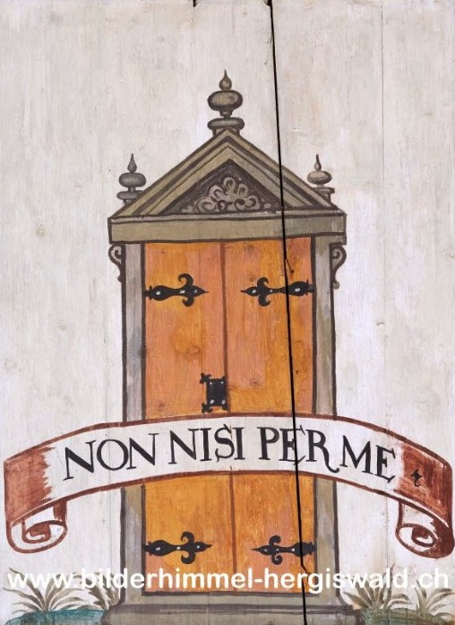

Die Himmelspforte – Süd 46

Motto: NON NISI PER ME.
Übersetzung: Nur durch mich.
Erklärung:
Die «verschlossene Pforte» stammt aus der Bibel (Ezechiel 44). Dort sieht ein Prophet ein Tor, das fest verschlossen ist. Gott erklärt ihm: Dieses Tor bleibt zu – niemand darf hindurchgehen. Denn Gott selbst ist durch dieses Tor eingezogen, und deshalb bleibt es für immer geschlossen.
Schon früh haben Christen darin ein Bild für Maria gesehen: Sie ist die «Pforte», durch die Christus in die Welt kommt – und die danach dennoch «verschlossen» bleibt. Klingt paradox, ist aber genau der Punkt: ein schönes Bild für ihre besondere Rolle.
Auch hier wird Maria als prächtiges, kunstvoll gestaltetes Tor dargestellt. Und sie scheint selbst zu sagen: «Nur durch mich.» Das ist durchaus selbstbewusst gemeint – denn ohne sie gäbe es diese Geschichte nicht.
Gleichzeitig ist sie nicht einfach ein geschlossenes Tor, sondern eines, das sich für die Menschen öffnet: als Zugang zum Himmel, als Vermittlerin zwischen Gott und den Menschen. Oder, etwas bodenständiger gesagt: Ohne sie kommt man nicht ganz so einfach durch.
Kurz: ein Tor, das eigentlich zu ist – und gerade deshalb so viel Bedeutung hat.